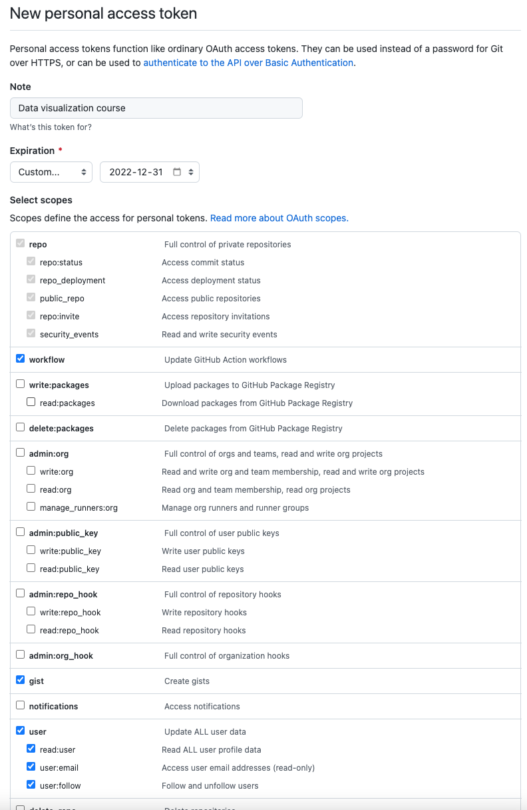

6 What is version control software?
6.1 Goals
In this lesson I will explain what version control is and why we use it. I will also demonstrate how we will use version control with Rstudio and github in this course for tasks, assignments, and the term project.
6.2 Introduction
Version control software is used to manage the process of creating software. It is commonly used to track changes, manage the revision process of correcting errors and adding new features, track the history of a project through different versions, synchronize contributions from many different people, and facilitate the distribution of software to a broad audience. Version control software is most commonly applied to the production of complex projects like software, but it can be used for text documents, data, web pages, and other applications.
6.3 What software is used for version control?
Version control software has a history dating back several decades, so there are many different tools available. We will be using one of the most popular packages, known as git (homepage). Git keeps the entire history of a project on your own computer and does not require any central repository. Since version control software is often used to coordinate the work of many authors and to distribute the product, central repositories such as GitHub (homepage) have become very popular, to the point that some people see them as an integrated set of tools. Other popular version control software packages include Mercurial and Subversion. There are several alternatives to GitHub such as bitbucket, gitlab and more.
We will be using git and github in this course. There are many add-on tools to help you work with git. We will use the excellent tools built-in to Rstudio. Other tools that are popular, but we will not explore are a simpler git called gitless and many different graphical interfaces.
6.4 Why is version control used in data visualization?
Data visualization is the process of combining data with computer code to create a visualization. Both of these parts can change with new information and new ideas, can require synthesis of skills from multiple authors, and benefit from transparency in design and distribution. As a result, version control software is a natural tool to help with the work of data visualization.
Suppose you develop a data visualization and you want to distribute the result, but you anticipate updating the data and revising the analyses. This sequence of steps is very similar to software development: an initial version is produced and released to users, changes are made, new versions are produced. Users (of software and data visualizations) want to know what version they are using, if there are any updates, and what the changes were between the versions. Version control software can help with these tasks and, once the key concepts are understood, without much extra effort on the part of the team producing the data visualization. Understanding this workflow is a valuable technical skill on its own.
In this course we will integrate just enough use of version control to help you see how it can be helpful and to get you past the uncomfortable stage of knowing what version control is without knowing the basics of how to use it. You will be fluent beginner users of the git model of version control by the end of the course.
6.5 How will we use version control?
Course work and evaluation from this lesson onward in the course will require you to use git and github. As part of your final project, you will practice using them as tools for collaboration. This course will emphasize the most basic uses of git and give you an opportunity to practice core elements of using git.
6.6 Introduction to git
Git organizes data in a repository, commonly called a repo. The repo contains a copy of all the files you ask git to track and it tracks all changes you make to the files. One you create a repository you must stage or add files to the repository. Staging is a declaration that the current version of a file is the one you want to added to the repository. Each file must be staged as a separate step. (In Rstudio this just means checking a box.) Once you have staged all the files you want, you commit them to the repository. This updates the repository, moving files from the staged area. Complete copies of new files are stored, but if a file has been changed, only the differences between the old and new versions are retained. All of these changes happen on your own computer, in a sub-folder called .git used by git to keep track of the repository. If you are using a service like github you can then push your changes to the remote location so that they can easily be obtained by others.
6.7 Using git with Rstudio
Here are the most important steps for using git with Rstudio. It looks like a lot of steps, because I’ve broken down each task into simple steps. In practice, once you are used to the process, it’s all quite simple.
- Check to be sure git is working on your computer
- Create a new Rstudio project in a new folder and enable version control
- Add a file to your project
- Stage your files to your local git repository
- Commit your staged changes to your local git repository
6.8 Using github with Rstudio
There are a few different ways of working with github and Rstudio. For this course you will be using repositories I have created for you, so I will start by describing that process. At the end of this lesson I will describe the differences in workflow when you create your own repositories.
- Create a github account
- Find the repository you want to use in your account
- Authorize Rstudio to use your account (GitHub is very particular about security since it is such a popular tool.)
- Create a new project by cloning the remote repository with Rstudio
- Revise a file in your project (including renaming, creating new files)
- Stage those changes on your computer
- Commit those changes to the repository on your computer
- Push the changes to github
- Check the github website to see that the changes have been received
6.9 Setup
You should have already done this step as part of an earlier lesson. The instructions are repeated below in case you missed the step or something went wrong.
6.9.1 On a Macintosh (OSX) computer
To install git, open the Terminal tab within Rstudio (or using the application Terminal found in the Applications > Utilities folder) and type
xcode-select --install
and wait a few minutes.
Type git at the terminal to check that the installation worked.
6.9.2 On a Windows computer
Download git from git-scm using the download link. Run the installer, accepting all the default options in the many dialog boxes that appear.
When you are done, type git in the Rstudio terminal. If you see some help text displayed instead of an error message you know git is installed.
Do not move on to the next steps until you have git working properly on your computer. If you can’t get it working on your own computer, use rstudio.cloud for now.
6.9.3 On rstudio.cloud
Git is already installed on rstudio.cloud. There are several ways to confirm this.
- You can click on the “terminal” tab and type
git. You will see a help message instead of an error message. - Under the menu item Tools > Version Control > Project setup, you will see git as a choice in the popup menu for “version control system” instead of “none”.
- Using File > New Project > Version Control > Git to create a new project using a remote repository (such as this sample) will work.
6.10 Tell git your name and email address
When you use git to communicate with GitHub, git needs to know your name and email address to help other people know who made the changes you are sending.
In the Rstudio “terminal” window (not the “console” window), type the following, placing your name and email in the spaces indicated:
git config --global user.email "you\@example.com"git config --global user.name "Your Name"
6.11 Set up a github account
- Create a free account at github.com
- Tell me your github account name by filling in the brightspace survey for Task 2.
- You need to tell Rstudio how to prove to github that you are allowed to use your own account. Most sites on the internet use passwords for this authentication process, but GitHub has found this to be insecure and a bit inconvenient. Instead we will use a Personal Access Token (PAT). Here are the steps to follow:
- Install the
usethispackage. For example, typeinstall.packages("usethis")in the R console. - In the R console, type
usethis::create_github_token(). This will open up a web browser. You will be asked to login and perhaps use two factor authentication. Eventually you will get a page that looks like the figure below. Enter a note to describe the token and pick an expiry date (my suggestions are shown in the screenshot.) Make sure you have at least the boxes shown below checked (repo, user, workflow). Click the green generate token at the bottom of the screen. - Copy the random numbers and letters that make up your token by clicking the two overlapping blue boxes (or highlight and select copy from the menu).
- In the R console, type
gitcreds::gitcreds_set()and then enter the PAT by pasting it into the console.
- Install the

These instructions are adapted from a guide called [Happy git with R](https://happygitwithr.com/).6.11.1 Clone a project from github
Once you have sent me your GitHub user ID, I will create two repositories in your account, one for the Tasks for the whole term and one for the Assignments for the whole term.
- Go to github.com. Make sure you are logged in. You will see a list of repositories on the left side of your screen.
- Click on the one called “data-viz-tasks-” followed by your ID
- Click on the green button labelled “Code” and copy the https link by clicking on the two overlapping squares (or cutting and pasting the URL).
- Start Rstudio.
- If you are already working on some other files, choose: Session > New session
- Use the Rstudio menu: File > New Project… > Version control > Git
- Paste in the repository link (URL). Use the “Browse…” button to select a directory to store your project. Choose a deliberate place on your computer (e.g., on the Desktop, in a folder called STAT2430, or whatever you prefer.).
- Click “Create Project”.
The necessary files will be copied from GitHub onto your computer and in a few moments you will have a new R project open on your computer.
6.11.2 Edit an existing markdown file
- From the Files tab (lower right of the screen), click on one of the task Rmd files.
- Make a minor change, such as adding your name in the indicated spot near the top of the file.
- Save the file.
6.11.3 Stage and commit your changes
- Click the “Git” tab in the upper right of the Rstudio window.
- You should see the Rmd file you just created with a status “M” (in blue) that means the file has been modified.
- Check the “Staged” box beside all the file. You have now told git you want to add these to your local repository when you next commit changes.
- Click “Commit”. A pop-up window will show you the files you are committing with changes. You are asked for a “commit message” in the upper right. Type a short informative message here. This is a valuable record of what you were hoping to achieve with these changes. I’ll type “learning git and making my first commit to my first repository”.
- Click “Commit”. A message box appears showing you what happened. I don’t usually read this.
- Click “Close”.
- Close the Commit popup by using the “X” button to close a window on your computer.
6.11.4 Make some more changes to your files
You should notice that the “status” display in the Git tab is now blank. There are no differences between the files in your R project and your local git repository. Let’s see what happens when we change this.
- Make a simple change to your Rmd file. For example, set the date to tomorrow. Save the file.
- Notice that the file now appears in your Git status tab. There should be a blue M beside the file name to indicate the file has been modified.
- Click the staged checkbox.
- Commit the changes to your local repository.
6.11.5 Publish your changes to GitHub
Before your work can be graded, you need to send it from your computer to GitHub. Once it is there, I can download it to my computer. To publish these files on github you need to push the changes from your computer to the github (remote) repository.
Repositories on github can be public (so anyone can see them) or private (so that only you and people you give explicit permission can see them.) The course repositories I have created for you are private (and the TA and I can both edit them.)
- Click the green up arrow in the Git tab to “push” your new changes to github.
- Reload the github window in your web browser. The start of your commit message should appear next to the files you changed.
Congratulations! You are a git and github novice now.
6.12 Creating your own repositories
For all coursework you will use repositories I have created. That is the workflow described above. If you want to create your own repositories for other work and learning, here are some steps to get you started.
6.12.1 Create a project
- Start Rstudio.
- If you are already working on some other files, choose: Session > New session
- Use the Rstudio menu: File > New Project… > New Directory > New Project
- Give the directory for your new project and place in a deliberate place on your computer (e.g., on the Desktop, in a folder called STAT2430, or whatever you prefer.). Make sure “Create a git repository” is checked. Then click “Create Project”.
6.12.2 Create a new markdown file
- Use Rstudio menu: File > New file > R Markdown …
- Give the document a title and make sure your name appears in the space for Author. Use HTML output.
- A standard template for an R markdown file will be created.
- Save the file in your new project. Call it something like “example” or “testing”.
- If you like, click “knit” to see the output of the R markdown document. We’ll learn more about this later.
6.12.3 Stage and commit your changes
- Click the “Git” tab in the upper right of the Rstudio window.
- You should see three files – the Rmd file you just created plus “.gitignore” and and Rproj file that stores information about your project.
- Check the “Staged” box beside all three files. You have now told git you want to add these to your local repository when you next commit changes.
- Click “Commit”. A pop-up window will show you the files you are committing with changes (everything, since we’re making our first commit). You are asked for a “commit message” in the upper right. Type a short informative message here. This is a valuable record of what you were hoping to achieve with these changes. I’ll type “learning git and making my first commit to my first repository”.
- Click “Commit”. A message box appears showing you what happened. I don’t usually read this.
- Click “Close”.
- Close the Commit popup by using the “X” button to close a window on your computer.
6.12.4 Make some more changes to your files
You should notice that the “status” display in the Git tab is now blank. There are no differences between the files in your R project and your local git repository. Let’s see what happens when we change this.
- Make a simple change to your Rmd file. For example, set the date to tomorrow. Save the file.
- Notice that the file now appears in your Git status tab. There should be a blue M beside the file name to indicate the file has been modified.
- Check the staged button.
- Commit the changes to your local repository.
6.12.5 Connect to github
To publish these files on github you have to do a few steps.
- You need to create a repository on github.
- You need to connect your local repository to the github repository.
- You need to push the changes from your computer to the github (remote) repository.
Repositories on github can be public (so anyone can see them) or private (so that only you and people you give explicit permission can see them.) We’ll make this repository private.
- Go to github.com.
- Click the bright green button “New” on the left next to the word “Repositories”.
- Give your repository a name. Don’t use spaces; use - or _ to connect words. I suggest “my-first-repository”.
- Click the radio button beside “Private”
- Don’t check any other boxes.
- Click the green button “Create repository”
- Copy the third last line of code on the next screen:
git branch -M main. - Go back to Rstudio. Paste the git command into the “Terminal” window and hit enter.
- Copy the second last line of code on the next screen. On my example its
git remote add origin https://github.com/AndrewIrwin/my-first-repository.git. Yours will have your github name and repository name. Paste it into the Terminal window. - Do the same thing with the last line of code:
git push -u origin main - Go back to github and refresh your window. You should see your three files from your R project there in the web browser now.
6.12.6 Make and push another change
You’re all done the setup now. Now we will practice the normal day-to-day work on an R project. These are the same steps you would perform with a repository cloned from github (see the previous section).
- Make a change to your Rmd file. Perhaps change the title or add your middle initial.
- Save the file.
- Stage and commit your changes to your local repository.
- Click the green up arrow in the Git tab to “push” your new changes to github.
- Reload the github window in your web browser. The start of your commit message should appear next to the files you changed.
6.13 Clean up
If you don’t want to keep this repository, you can get rid of it in two steps.
- Delete the folder from your computer by dragging it to the trash (Finder on Macintosh, File explorer on Windows)
- Delete it from github. On the repository page on github.com, go to: Settings, then scroll to the bottom. From the “danger zone” choose “Delete this repository”. Github really doesn’t want you to do this by mistake, so it requires two confirmation steps. You must type the repository name to confirm and then enter your github password to confirm.
6.14 Resources
- Rstudio help for git
- Software Carpentry tutorial using git with Rstudio
- Happy Git with R
- Highlights of key features of git and github for developers
- Advanced Git cheat sheet
- A more advanced look at the internals of git
- Article on teaching statistics with git and github, for students and instructors.